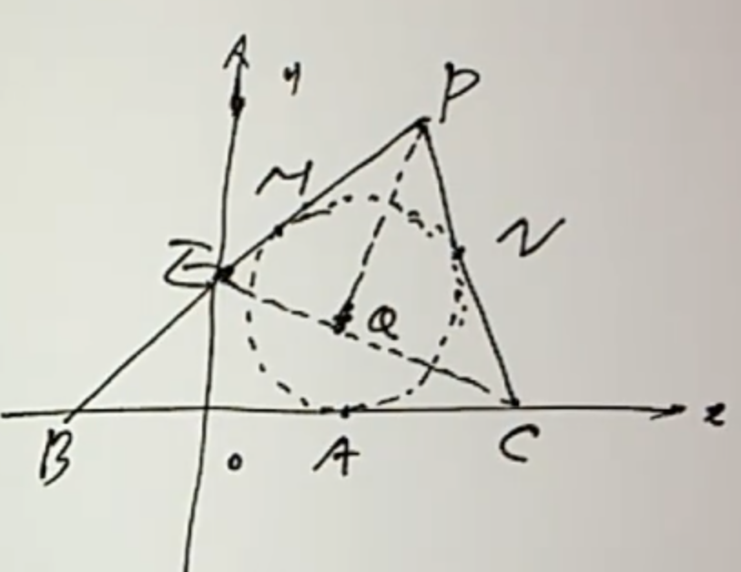
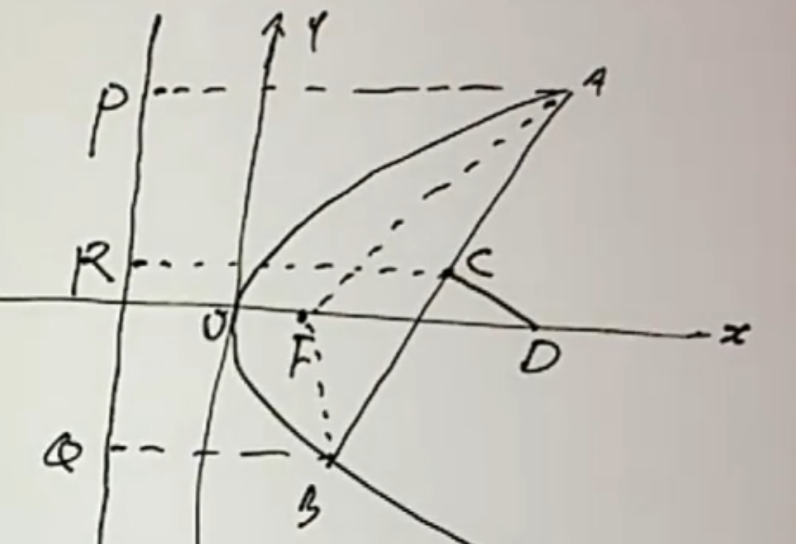

<meta data-alternate="https://freshmark.sunisalex.org/posts/math/2022-labour-day/4-30-01/" data-article="true" data-canonical="https://freshmark.sunisalex.org/en/posts/math/2022-labour-day/4-30-01/" data-description="Notes for curious people." data-freshmark-page data-title="Peijian Education 2022 Labor Day Problem-Solving Workshop (April 30) — Freshmark"><main><header class="container article-header"><a href="/en/" class="back-link">← Back to all writing</a><p class="eyebrow article-subject">Mathematics</p><h1>Peijian Education 2022 Labor Day Problem-Solving Workshop (April 30)</h1><p class="article-dek"></p><div class="article-meta"><time datetime="2026-06-14">June 14, 2026</time><span>21 min read</span><span>High School Mathematics</span><span class="view-count" data-article-view-count hidden>Article views <strong data-article-views></strong></span><a href="index.md" download>Download Markdown</a><button type="button" class="article-share" data-share-article data-share-text="" data-share-title="Peijian Education 2022 Labor Day Problem-Solving Workshop (April 30)"><span data-share-label>Share article</span></button><output aria-live="polite" class="visually-hidden" data-share-status role="status"></output></div></header><div class="article-wrap"><aside class="toc"><div class="toc-head"><p>On this page</p><button type="button" class="toc-toggle" aria-expanded="false" aria-label="Toggle table of contents" data-toc-toggle><span class="toc-toggle-label">Table of contents</span><span class="toc-toggle-icon" aria-hidden="true"></span></button></div><nav aria-label="Table of contents" class="toc-links" data-toc-links><a href="#example-1" class="toc-level-2">Example 1</a><a href="#example-2" class="toc-level-2">Example 2</a><a href="#example-3" class="toc-level-2">Example 3</a><a href="#example-4" class="toc-level-2">Example 4</a><a href="#example-5" class="toc-level-2">Example 5</a><a href="#example-6" class="toc-level-2">Example 6</a><a href="#example-7" class="toc-level-2">Example 7</a><a href="#example-8" class="toc-level-2">Example 8</a><a href="#example-9" class="toc-level-2">Example 9</a><a href="#example-10" class="toc-level-2">Example 10</a><a href="#example-11" class="toc-level-2">Example 11</a><a href="#compilation-of-answers-to-analytical-geometry-proof-questions" class="toc-level-3">Compilation of answers to analytical geometry proof questions</a><a href="#example-12" class="toc-level-2">Example 12</a><a href="#example-13" class="toc-level-2">Example 13</a><a href="#example-14" class="toc-level-2">Example 14</a><a href="#reference-answer" class="toc-level-3">Reference answer</a></nav></aside><article class="prose"><!--more--><h2 id="example-1">Example 1</h2><p>Parabola <span class="math-expression math-inline" data-math-source="y^2=2px(p\gt 0)"></span>&#32;intersects circle <span class="math-expression math-inline" data-math-source="(x-2)^2+y^2=3"></span>&#32;at two points A and B. The midpoint of line segment AB is on <span class="math-expression math-inline" data-math-source="y=x"></span>. Find the value of p.</p><p>Lianli eliminate y to get:</p><p><span class="math-expression math-display" data-math-source="\begin{gathered} (x-2)^2+2px=3\\ x^2+2(p-2)x+1=0\\ \Longleftrightarrow\begin{cases} x_1x_2=1\\ x_1+x_2=-2(p-2)\\ \Delta=4(p-2)^2-4\gt 0\longleftrightarrow |p-2|\gt 1 \end{cases}\\ y_1^2+y_2^2=2p(x_1+x_2)=(y_1+y_2)^2-2y_1y_2\\ 2y_1y_2=(y_1+y_2)^2-2p(x_1+x_2)\\ =(x_1+x_2)^2-2p(x_1+x_2)\\ =4(p-2)^2+4p(p-2)\\ =8p^2-24p+16\\ y_1y_2=4p^2-12p+8\\ x_1x_2=\frac{(y_1y_2)^2}{4p^2}=1\\ y_1y_2=\pm 2p\\ 4p^2-12p+8=\pm 2p\\ \end{gathered}" data-math-display></span></p><p>Next, we will discuss based on the difference between positive and negative signs:</p><p><span class="math-expression math-display" data-math-source="\begin{gathered} 2p^2-7p+4=0\\ \Delta=17\gt 0\\ p=\frac{7\pm\sqrt{17}}{4}\\ p=\frac{7+\sqrt{17}}{4},p-2=\frac{\sqrt{17}-1}{4}\lt 1\\ \text{discard this solution}\\ p=\frac{7-\sqrt{17}}{4},2-p=\frac{\sqrt{17}+1}{4}\gt 1\\ \text{retain this solution} \end{gathered}" data-math-display></span></p><p><span class="math-expression math-display" data-math-source="\begin{gathered} 2p^2-5p+4=0\\ \Delta=25-32\lt 0\\ \text{no real solution} \end{gathered}" data-math-display></span></p><h2 id="example-2">Example 2</h2><p>(2009 Nanjing University) Draw a circle tangent to the x-axis above the x-axis. The abscissa of the tangent point is <span class="math-expression math-inline" data-math-source="\sqrt{3}"></span>. The tangents of the circle are drawn through the point <span class="math-expression math-inline" data-math-source="B(-3,0),C(3,0)"></span>. The two tangents intersect at <span class="math-expression math-inline" data-math-source="P"></span>. <span class="math-expression math-inline" data-math-source="Q"></span>&#32;is the projection of C on the bisector of the acute angle <span class="math-expression math-inline" data-math-source="\angle BPC"></span>.</p><p>(1) Find the trajectory equation of P and the value range of its abscissa.</p><p>(2) Find the trajectory equation of Q.</p><p>(1)</p><p><picture class="responsive-picture"><source srcset="image.freshmark-7b4741ffb8b2-480w.avif 480w, image.freshmark-7b4741ffb8b2-814w.avif 814w" type="image/avif"><source srcset="image.freshmark-7b4741ffb8b2-480w.webp 480w, image.freshmark-7b4741ffb8b2-814w.webp 814w" type="image/webp"></picture></p><p>Apparently <span class="math-expression math-inline" data-math-source="|PB|-|PC|=|AB|-|AC|=3+\sqrt{3}-(3-\sqrt{3})=2\sqrt{3}"></span></p><p>Point P is located on the right branch of the hyperbola <span class="math-expression math-inline" data-math-source="\frac{x^2}{a^2}-\frac{y^2}{b^2}=1"></span>: <span class="math-expression math-display" data-math-source="2a=2\sqrt{3},2c=3" data-math-display></span><span class="math-expression math-display" data-math-source="a=\sqrt{3},c=3,b=\sqrt{6}" data-math-display></span> So the trajectory equation of point P <span class="math-expression math-inline" data-math-source="\frac{x^2}{3}-\frac{y^2}{6}=1(x\gt \sqrt{3})"></span></p><p>(2)</p><p>Considering extending CQ to intersect PB at point E, we have <span class="math-expression math-inline" data-math-source="EQ=QC,PE=PC"></span></p><p>In addition, point O is the midpoint of line segment BC, so OQ is the median line opposite to the BE side in <span class="math-expression math-inline" data-math-source="\triangle PBC"></span>&#32;<span class="math-expression math-display" data-math-source="OQ=\frac{BE}{2}=\frac{PB-PC}{2}=\sqrt{3}" data-math-display></span> Find out what other constraints there are on point Q:</p><p>For any point Q (<span class="math-expression math-inline" data-math-source="y_Q\ne 0"></span>) whose distance from the origin is <span class="math-expression math-inline" data-math-source="\sqrt{3}"></span>, you can always double the length of CQ to get the point, and then extend the intersection of the vertical line in BE and EC to get the point P, so the trajectory equation of point Q is: <span class="math-expression math-display" data-math-source="x^2+y^2=3(y\ne0)" data-math-display></span></p><h2 id="example-3">Example 3</h2><p>(Self-recruited by Peking University) AB is the point on <span class="math-expression math-inline" data-math-source="y=1-x^2"></span>&#32;on both sides of the y-axis. Find the minimum value of the area enclosed by the tangent line passing through A and B and the x-axis.</p><p>Let's assume that <span class="math-expression math-inline" data-math-source="A(u,1-u^2),B(v,1-v^2),u\lt0\lt v"></span>, point E is the intersection point of the tangent lines passing through points A and B.</p><p>Yi Zhi: <span class="math-expression math-inline" data-math-source="l_{AE}:y=-2ux+u^2+1,l_{BE}:y=-2vx+v^2+1,E(\frac{u+v}{2},1-uv)"></span></p><p>Let <span class="math-expression math-inline" data-math-source="y=0"></span>, the length of the base of the triangle on the x-axis is <span class="math-expression math-inline" data-math-source="s=\frac{1}{2}(v+\frac{1}{v}-u-\frac{1}{u})"></span></p><p>Consider negative substitution: Let <span class="math-expression math-inline" data-math-source="t=-u\gt0"></span>&#32;kill two birds with one stone. It not only makes the sign of <span class="math-expression math-inline" data-math-source="v,t"></span>&#32;the same, but also simplifies the area expression.</p><p><span class="math-expression math-display" data-math-source="\begin{gathered} S_{\triangle}=\frac{1}{2}sy_E=\frac{1}{4}(v+t+\frac{1}{v}+\frac{1}{t})(1+vt)\\ \ge\frac{1}{2}(\sqrt{vt}+\sqrt{\frac{1}{vt}})(1+vt)\\ =\frac{1}{2}\frac{(vt+1)^2}{\sqrt{vt}} \end{gathered}" data-math-display></span></p><p>Here, the mean inequality is used for the <span class="math-expression math-inline" data-math-source="v,t"></span>&#32;and <span class="math-expression math-inline" data-math-source="\frac{1}{v},\frac{1}{u}"></span>&#32;groups because the equality conditions are guessed through symmetry.</p><p><span class="math-expression math-display" data-math-source="\begin{gathered} S_{\triangle}=\frac{1}{2}\frac{(vt+\frac{1}{3}+\frac{1}{3}+\frac{1}{3})^2}{\sqrt{vt}}\\ \ge\frac{1}{2}\frac{(4\sqrt[4]{vt(\frac{1}{3})^3})^2}{\sqrt{vt}}=\frac{8\sqrt{3}}{9} \end{gathered}" data-math-display></span></p><h2 id="example-4">Example 4</h2><p>The straight line passing through the focus F of the parabola <span class="math-expression math-inline" data-math-source="y^2=4x"></span>&#32;intersects the parabola at two points A and B, and the directrix of the parabola intersects the x-axis at the point C, if <span class="math-expression math-inline" data-math-source="\angle OFA=130\degree"></span>&#32;(O is the coordinate origin), find <span class="math-expression math-inline" data-math-source="\tan\angle ACB"></span>.</p><p><span class="math-expression math-display" data-math-source="\begin{gathered} x=ky+1,k=\tan40\degree\\ y^2=4x=4ky+4,y^2-4ky-4=0\\ A(x_1,y_1),B(x_2,y_2)\\ \tan\angle ACB=\frac{k_{AC}-k_{BC}}{1+k_{AC}k_{BC}}\\ =\frac{y_1(x_2+1)-y_2(x_1+1)}{(x_1+1)(x_2+1)+y_1y_2}\\ =\frac{y_1(ky_2+2)-y_2(ky_1+2)}{(ky_1+2)(ky_2+2)+y_1y_2}\\ =\frac{2(y_1-y_2)}{(k^2+1)y_1y_2+2k(y_1+y_2)+4}\\ =\frac{2\sqrt{16k^2+16}}{(k^2+1)(-4)+2k(4k)+4}\\ =\frac{8\sqrt{k^2+1}}{4k^2}\\ =\frac{2}{k}\sqrt{1+\frac{1}{k^2}}\\ =\frac{2}{\tan40\degree}\sqrt{1+\tan^250\degree}\\ =\frac{2}{\tan40\degree\cos50\degree}\\ =\frac{2\cos40\degree}{\cos^250\degree} \end{gathered}" data-math-display></span></p><p><strong>Another solution: use the definition of the parabola (added by Claude)</strong></p><blockquote><p>This section was added by Claude, an AI model made by Anthropic, after the author's solution. It is not written by the original author.</p></blockquote><p><span class="math-expression math-inline" data-math-source="C(-1,0)"></span>&#32;lies on the directrix <span class="math-expression math-inline" data-math-source="x=-1"></span>, so <span class="math-expression math-inline" data-math-source="x_A+1"></span>&#32;is the distance from <span class="math-expression math-inline" data-math-source="A"></span>&#32;to the directrix, which equals <span class="math-expression math-inline" data-math-source="|AF|"></span>. The line <span class="math-expression math-inline" data-math-source="FA"></span>&#32;makes <span class="math-expression math-inline" data-math-source="50^\circ"></span>&#32;with the positive <span class="math-expression math-inline" data-math-source="x"></span>-axis, so <span class="math-expression math-inline" data-math-source="y_A=|AF|\sin50^\circ"></span>&#32;and</p><p><span class="math-expression math-display" data-math-source="\tan\angle ACF=\frac{y_A}{x_A+1}=\frac{|AF|\sin50^\circ}{|AF|}=\sin50^\circ ." data-math-display></span></p><p>Likewise <span class="math-expression math-inline" data-math-source="\tan\angle BCF=\frac{|y_B|}{x_B+1}=\sin50^\circ"></span>&#32;(the acute angle between <span class="math-expression math-inline" data-math-source="FB"></span>&#32;and the axis is also <span class="math-expression math-inline" data-math-source="50^\circ"></span>), so <span class="math-expression math-inline" data-math-source="CF"></span>&#32;bisects <span class="math-expression math-inline" data-math-source="\angle ACB"></span>&#32;and</p><p><span class="math-expression math-display" data-math-source="\tan\angle ACB=\frac{2\sin50^\circ}{1-\sin^250^\circ}=\frac{2\sin50^\circ}{\cos^250^\circ}=\frac{2\cos40^\circ}{\cos^250^\circ}\approx3.708," data-math-display></span></p><p>matching the result above without solving any system.</p><h2 id="example-5">Example 5</h2><p>Find the equation of the straight line passing through the intersection of <span class="math-expression math-inline" data-math-source="y=2x^2-2x-1"></span>&#32;and <span class="math-expression math-inline" data-math-source="y=-5x^2+2x+3"></span>.</p><p><span class="math-expression math-display" data-math-source="5y+2y=5(2x^2-2x-1)+2(-5x^2+2x+3)=-6x+1" data-math-display></span></p><p><span class="math-expression math-display" data-math-source="y=\frac{-6}{7}x+\frac{1}{7}" data-math-display></span></p><p>Another method:</p><p><span class="math-expression math-display" data-math-source="\begin{cases} y=2x^2-2x-1=kx+b,\\ y=-5x^2+2x+3=kx+b\\ \end{cases}" data-math-display></span></p><p><span class="math-expression math-display" data-math-source="\begin{cases} 2x^2-(k+2)x-(b+1)=0,\\ 5x^2+(k-2)x+(b-3)=0 \end{cases}" data-math-display></span></p><p>The solutions of the two equations should be exactly the same, so the corresponding vectors of the equation coefficients are parallel. If there is a component with a size of 0, it is obviously a contradiction, so:</p><p><span class="math-expression math-display" data-math-source="\begin{gathered} \frac{2}{5}=-\frac{k+2}{k-2}=-\frac{b+1}{b-3} \end{gathered}" data-math-display></span></p><p>Solution: <span class="math-expression math-inline" data-math-source="k=-\frac{6}{7},b=\frac{1}{7}"></span></p><h2 id="example-6">Example 6</h2><p>Point A is on <span class="math-expression math-inline" data-math-source="y=kx"></span>, point B is on <span class="math-expression math-inline" data-math-source="y=-kx"></span>, where <span class="math-expression math-inline" data-math-source="k\gt0,|OA||OB|=k^2+1"></span>&#32;and <span class="math-expression math-inline" data-math-source="A,B"></span>&#32;are on the same side of the y-axis.</p><p>(1) Find the trajectory equation C of the midpoint M of AB;</p><p>(2) Curve C is tangent to the parabola <span class="math-expression math-inline" data-math-source="x^2=2py(p\gt0)"></span>. Verify that the tangent points are on two fixed straight lines, and obtain the two tangent line equations.</p><p>(1)</p><p>Let <span class="math-expression math-inline" data-math-source="A(x_1,y_1),B(x_2,y_2)"></span>&#32;be given by <span class="math-expression math-inline" data-math-source="|OA||OB|=k^2+1"></span>.</p><p><span class="math-expression math-display" data-math-source="\begin{gathered} \sqrt{x_1^2x_2^2(k^2+1)^2}=k^2+1\\ x_1x_2=1\\ x=\frac{x_1+x_2}{2},y=\frac{y_1+y_2}{2}=\frac{k}{2}(x_1-x_2) \end{gathered}" data-math-display></span></p><p>Thinking of <span class="math-expression math-inline" data-math-source="4x_1x_2=(x_1+x_2)^2-(x_1-x_2)^2"></span>, there are:</p><p><span class="math-expression math-display" data-math-source="\begin{gathered} 4=(2x)^2-(\frac{2}{k}y)^2\\ x^2-\frac{y^2}{k^2}=1 \end{gathered}" data-math-display></span></p><p>(2)</p><p><span class="math-expression math-display" data-math-source="\begin{cases} x^2=2py,\\ x^2-\frac{y^2}{k^2}=1 \end{cases}" data-math-display></span></p><p><span class="math-expression math-display" data-math-source="\begin{gathered} y^2-2pk^2y+k^2=0\\ \Delta=4p^2k^4-4k^2=0\\ pk=1(p\gt0,k\gt0)\\ y^2-2ky+k^2=0\\ y_1=y_2=k,\\ x^2=2pk=2,x=\pm\sqrt{2} \end{gathered}" data-math-display></span></p><p>Therefore, the two tangent points are respectively on <span class="math-expression math-inline" data-math-source="x=\sqrt{2},x=-\sqrt{2}"></span>.</p><p>Tangent equation: <span class="math-expression math-inline" data-math-source="y=\sqrt{2}kx-k,y=-\sqrt{2}kx-k"></span></p><h2 id="example-7">Example 7</h2><p>Assume that the focus of the parabola <span class="math-expression math-inline" data-math-source="y^2=2px(p\gt0)"></span>&#32;is F. A and B are two different points on the parabola. The straight line AB and the x-axis Not perpendicular, the perpendicular bisector of line segment AB intersects the x-axis at point <span class="math-expression math-inline" data-math-source="D(a,0)"></span>, denoted as <span class="math-expression math-inline" data-math-source="m=|AF|+|BF|"></span>.</p><p>(1) Prove: a is the arithmetic median of p and m;</p><p>(2) Assume <span class="math-expression math-inline" data-math-source="m=3p"></span>, straight line l // y-axis, and l is intercepted by a moving circle with AD as the diameter The chord length is constant, find the equation of the straight line l.</p><p><picture class="responsive-picture"><source srcset="image-1.freshmark-689ffc569f69-480w.avif 480w, image-1.freshmark-689ffc569f69-796w.avif 796w" type="image/avif"><source srcset="image-1.freshmark-689ffc569f69-480w.webp 480w, image-1.freshmark-689ffc569f69-796w.webp 796w" type="image/webp"></picture></p><p>(1)</p><p>Set point <span class="math-expression math-inline" data-math-source="A(2pu^2,2pu),B(2pv^2,2pv),k_{AB}=\frac{u-v}{u^2-v^2}=\frac{1}{u+v}"></span></p><p><span class="math-expression math-display" data-math-source="l_{D}:y=-(u+v)[x-p(u^2+v^2)]+p(u+v)" data-math-display></span></p><p>Let <span class="math-expression math-inline" data-math-source="y=0,a=x=p(u^2+v^2+1)"></span></p><p>Defined by a parabola: <span class="math-expression math-inline" data-math-source="m=p+2p(u^2+v^2)"></span></p><p>So there is: <span class="math-expression math-inline" data-math-source="m+p=2a"></span></p><p>(2)</p><p>From (1): <span class="math-expression math-inline" data-math-source="m=p+2p(u^2+v^2)=3p"></span>, then <span class="math-expression math-inline" data-math-source="u^2+v^2=1"></span>&#32;<span class="math-expression math-display" data-math-source="a=\frac{m+p}{2}=2p,D(2p,0)" data-math-display></span> <span class="math-expression math-inline" data-math-source="A(2pu^2,2pu)"></span>, equation of circle with AD as diameter:</p><p><span class="math-expression math-display" data-math-source="(x-2pu^2)(x-2p)+(y-2pu)y=0" data-math-display></span></p><p>Assume <span class="math-expression math-inline" data-math-source="l:x=k"></span>&#32;and enter the equation of the circle:</p><p><span class="math-expression math-display" data-math-source="\begin{gathered} (k-2pu^2)(k-2p)+(y-2pu)y=0\\ y^2-2puy+(k-2pu^2)(k-2p)=0\\ \Delta=4p^2u^2-4(k-2pu^2)(k-2p)\\ |y_1-y_2|=\sqrt{\Delta}=C \end{gathered}" data-math-display></span></p><p>This requires that the coefficient of <span class="math-expression math-inline" data-math-source="u"></span>&#32;in the discriminant is 0, that is, <span class="math-expression math-inline" data-math-source="k=\frac{3}{2}p,l:x=\frac{3}{2}p"></span></p><h2 id="example-8">Example 8</h2><p>In the plane rectangular coordinate system xOy, <span class="math-expression math-inline" data-math-source="A(-12,0),B(0,6)"></span>, point P is on the circle <span class="math-expression math-inline" data-math-source="O:x^2+y^2=50"></span>. If <span class="math-expression math-inline" data-math-source="\vec{PA}\cdot\vec{PB}\le20"></span>, find the range of the abscissa of point P.</p><p><span class="math-expression math-display" data-math-source="\begin{gathered} P(x,y):\vec{AP}\cdot\vec{BP}\le20\\ (x+12)x+y(y-6)\le20\\ (x+6)^2+(y-3)^2\le65\\ O:x^2+[(y-3)+3]^2=50\\ x^2+(y-3)^2+6(y-3)-41=0\\ \le x^2+[65-(x+6)^2]+6\sqrt{65-(x+6)^2}-41\\ \Longleftrightarrow \sqrt{65-(x+6)^2}\ge2(x+1)\\ \Longleftrightarrow \begin{cases} x+1\ge 0\\ 65-(x+6)^2\le 4(x+1)^2 \end{cases}\Longleftrightarrow x\in[-1,1]\\ \text{or }\Longleftrightarrow x+1\lt 0,x\in(-\infty,-1)\\ \end{gathered}" data-math-display></span></p><p>Although the range <span class="math-expression math-inline" data-math-source="[-5\sqrt{2},+1]"></span>&#32;is obtained in this way, it is difficult to know whether the algebraic deformation is an identity deformation by using the inequality as a condition. Consider using the <span class="math-expression math-inline" data-math-source="x^2+y^2=50"></span>&#32;equality as a condition.</p><p><span class="math-expression math-display" data-math-source="\begin{gathered} x\in[-5\sqrt{2},5\sqrt{2}], y\in \{-\sqrt{50-x^2},+\sqrt{50-x^2}\}\\ (x+12)x+y(y-6)\le20\\ (case1)y=-\sqrt{50-x^2}\\ x^2+12x+(50-x^2)+6\sqrt{50-x^2}\le20\\ 12x+6\sqrt{50-x^2}+30\le0\\ 2x+\sqrt{50-x^2}+5\le0\\ \sqrt{50-x^2}\le -(2x+5)\\ \Longleftrightarrow \begin{cases} 2x+5\le 0,\\ 50-x^2\le(2x+5)^2\\ \end{cases}\Longleftrightarrow x\in[-5\sqrt{2},-5]\\ (case2)y=+\sqrt{50-x^2}\\ 2x-\sqrt{50-x^2}+5\le0\\ \sqrt{50-x^2}\ge2x+5\\ \Longleftrightarrow\begin{cases} 2x+5\ge 0,\\ 50-x^2\ge (2x+5)^2 \end{cases}\Longleftrightarrow x\in[-\frac{5}{2},1]\\ \text{or }2x+5\lt0\Longleftrightarrow x\in[-5\sqrt{2},-\frac{5}{2}) \end{gathered}" data-math-display></span></p><p>To sum up, <span class="math-expression math-inline" data-math-source="x\in[-5\sqrt{2},1]"></span></p><p><strong>Another solution: use the circle to make the condition linear (added by Claude)</strong></p><blockquote><p>This section was added by Claude, an AI model made by Anthropic, after the author's solution. It is not written by the original author.</p></blockquote><p>Substitute <span class="math-expression math-inline" data-math-source="x^2+y^2=50"></span>&#32;into the dot product directly:</p><p><span class="math-expression math-display" data-math-source="\overrightarrow{PA}\cdot\overrightarrow{PB}=x^2+y^2+12x-6y=50+12x-6y\le20\iff y\ge2x+5 ." data-math-display></span></p><p>So <span class="math-expression math-inline" data-math-source="P"></span>&#32;is the part of the circle on or above the line <span class="math-expression math-inline" data-math-source="y=2x+5"></span>. Solving <span class="math-expression math-inline" data-math-source="x^2+(2x+5)^2=50"></span>&#32;gives <span class="math-expression math-inline" data-math-source="x^2+4x-5=0"></span>, i.e. <span class="math-expression math-inline" data-math-source="x=-5"></span>&#32;or <span class="math-expression math-inline" data-math-source="x=1"></span>. This arc passes through the leftmost point <span class="math-expression math-inline" data-math-source="(-5\sqrt2,0)"></span>&#32;(since <span class="math-expression math-inline" data-math-source="0\ge-10\sqrt2+5"></span>), so the range of the abscissa is <span class="math-expression math-inline" data-math-source="[-5\sqrt2,1]"></span>. Nothing is squared, so there is no question of whether a step is reversible.</p><h2 id="example-9">Example 9</h2><p>In the plane rectangular coordinate system xOy, the point <span class="math-expression math-inline" data-math-source="A(m,0),B(m+4,0)"></span>&#32;is known. If there is a point P on the circle <span class="math-expression math-inline" data-math-source="C:x^2+(y-3m)^2=8"></span>&#32;such that <span class="math-expression math-inline" data-math-source="\angle APB=45\degree"></span>, then the value range of the real number m is ___.</p><p>It is easy to know that the trajectory of P is the superior arc at both ends, and the corresponding center points are <span class="math-expression math-inline" data-math-source="M_1(m+2,2),M_2(m+2,-2)"></span>.</p><p></p><p>If circle C intersects with the minor arc of a circle, it must intersect with the minor arc of another circle. Therefore, we only need to consider the intersection of circle C with the upper and lower circles respectively.</p><p><span class="math-expression math-display" data-math-source="\begin{gathered} \angle APB=45\degree \\ \Longleftrightarrow M_1P=2\sqrt{2}\\ M_1P\in[\sqrt{(m+2)^2+(3m-2)^2}-2\sqrt{2},\sqrt{(m+2)^2+(3m-2)^2}+2\sqrt{2}]\\ \Longleftrightarrow \sqrt{(m+2)^2+(3m-2)^2}\le4\sqrt{2}\\ m\in[-\frac{6}{5},2] \end{gathered}" data-math-display></span></p><p>Likewise: <span class="math-expression math-inline" data-math-source="\sqrt{(m+2)^2+(3m+2)^2}\le4\sqrt{2},m\in[\frac{-4-2\sqrt{19}}{5},\frac{-4+2\sqrt{19}}{5}]"></span></p><p>To sum up, combining the two situations, <span class="math-expression math-inline" data-math-source="m\in[\frac{-4-2\sqrt{19}}{5},2]"></span></p><p>If <span class="math-expression math-inline" data-math-source="C:x^2+(y-3m)^2=8"></span>&#32;is a smaller circle, you may need to consider and exclude the situation where circle C only intersects minor arcs.</p><h2 id="example-10">Example 10</h2><p>As shown in the figure, in the plane rectangular coordinate system xOy, two tangent lines PM and PN to the circle <span class="math-expression math-inline" data-math-source="E:(x-1)^2+(y-1)^2=1"></span>&#32;are drawn through the point <span class="math-expression math-inline" data-math-source="P(2t^2,2t+1)"></span>, and the tangent points are M and N respectively.</p><p>(1) When <span class="math-expression math-inline" data-math-source="t=2"></span>, find the equation of straight line MN;</p><p>(2) When <span class="math-expression math-inline" data-math-source="t\in(1,+\infty)"></span>, assume that the tangent lines PM, PN and the y-axis intersect at points B and C respectively, and find the minimum value of the area of <span class="math-expression math-inline" data-math-source="\triangle PBC"></span>.</p><p></p><p>(1) <span class="math-expression math-inline" data-math-source="P(8,5),MN:7(x-1)+4(y-1)=1"></span></p><p>That is <span class="math-expression math-inline" data-math-source="MN:7x+4y-12=0"></span></p><p>Another solution: write down the equation of a circle with PE as its diameter, and subtract it from circle E using the curve system.</p><p>(2) Let the straight line passing through point P be <span class="math-expression math-inline" data-math-source="y=k(x-2t^2)+2t+1"></span></p><p>The straight line is tangent to the circle E: <span class="math-expression math-inline" data-math-source="d=\frac{|k(2t^2-1)-2t|}{\sqrt{1+k^2}}=1"></span></p><p>That is: <span class="math-expression math-inline" data-math-source="k^2+1=(2t^2-1)^2k^2-4t(2t^2-1)k+4t^2"></span></p><p>Simplify: <span class="math-expression math-inline" data-math-source="4t^2(t^2-1)k^2-4t(2t^2-1)k+(4t^2-1)=0(*)"></span></p><p><span class="math-expression math-display" data-math-source="\Delta=16t^2(2t^2-1)^2-16t^2(4t^2-1)(t^2-1)=16t^4" data-math-display></span></p><p>Let the two roots of (*) be <span class="math-expression math-inline" data-math-source="k_1,k_2"></span>.</p><p>Let <span class="math-expression math-inline" data-math-source="x=0,y=-2t^2k+2t+1"></span>, then <span class="math-expression math-inline" data-math-source="|BC|=2t^2|k_1-k_2|=2t^2\frac{4t^2}{4t^2|t^2-1|}=\frac{2t^2}{|t^2-1|},h=2t^2"></span></p><p><span class="math-expression math-display" data-math-source="S_{\triangle PBC}=\frac{1}{2}|BC|h=\frac{2t^4}{|t^2-1|}\ge8(t=\pm\sqrt{2})" data-math-display></span></p><h2 id="example-11">Example 11</h2><p>Assume that the eccentricity of the ellipse <span class="math-expression math-inline" data-math-source="C: \frac{x^2}{a^2} + \frac{y^2}{b^2} = 1 (a &gt; b &gt; 0)"></span>&#32;is <span class="math-expression math-inline" data-math-source="e = \frac{\sqrt{3}}{2}"></span>, and the straight line <span class="math-expression math-inline" data-math-source="y = x + \sqrt{2}"></span>&#32;is tangent to the circle <span class="math-expression math-inline" data-math-source="O"></span>&#32;with the origin as the center and the minor axis length of the ellipse <span class="math-expression math-inline" data-math-source="C"></span>&#32;as the radius.</p><p>(1) Find the equation of ellipse <span class="math-expression math-inline" data-math-source="C"></span>;</p><p>(2) As shown in the figure, <span class="math-expression math-inline" data-math-source="A_1"></span>, <span class="math-expression math-inline" data-math-source="A_2"></span>, <span class="math-expression math-inline" data-math-source="B_1"></span>, <span class="math-expression math-inline" data-math-source="B_2"></span>&#32;are the vertices of the ellipse <span class="math-expression math-inline" data-math-source="C"></span>, <span class="math-expression math-inline" data-math-source="P"></span>&#32;is any point on the ellipse <span class="math-expression math-inline" data-math-source="C"></span>&#32;except the vertex, and the straight line <span class="math-expression math-inline" data-math-source="B_2P"></span>&#32;intersects the axis of <span class="math-expression math-inline" data-math-source="x"></span>&#32;at the point <span class="math-expression math-inline" data-math-source="F"></span>, straight line <span class="math-expression math-inline" data-math-source="A_1B_2"></span>&#32;intersects <span class="math-expression math-inline" data-math-source="A_2P"></span>&#32;at point <span class="math-expression math-inline" data-math-source="E"></span>. Suppose the slope of <span class="math-expression math-inline" data-math-source="A_2P"></span>&#32;is <span class="math-expression math-inline" data-math-source="k"></span>&#32;and the slope of <span class="math-expression math-inline" data-math-source="EF"></span>&#32;is <span class="math-expression math-inline" data-math-source="m"></span>. Verify: <span class="math-expression math-inline" data-math-source="2m - k"></span>&#32;is a constant value.</p><p>(1) <span class="math-expression math-inline" data-math-source="b=d=1,e=\frac{c}{a}=\frac{\sqrt{a^2-b^2}}{a}=\frac{\sqrt{3}}{2},a=2b=2"></span></p><p>Therefore <span class="math-expression math-inline" data-math-source="C:\frac{x^2}{4}+\frac{y^2}{1}=1"></span></p><p>(2)</p><h3 id="compilation-of-answers-to-analytical-geometry-proof-questions">Compilation of answers to analytical geometry proof questions</h3><p><strong>Known conditions:</strong> Ellipse <span class="math-expression math-inline" data-math-source="C: \frac{x^2}{4} + y^2 = 1"></span>&#32;(obtained according to the first question). <span class="math-expression math-inline" data-math-source="A_1(-2, 0), A_2(2, 0), B_1(0, -1), B_2(0, 1)"></span>&#32;is the vertex of the ellipse. At the position of point <span class="math-expression math-inline" data-math-source="P"></span>&#32;different from the vertex on the ellipse, the slope of <span class="math-expression math-inline" data-math-source="A_2P"></span>&#32;is <span class="math-expression math-inline" data-math-source="k"></span>, and the slope of <span class="math-expression math-inline" data-math-source="EF"></span>&#32;is <span class="math-expression math-inline" data-math-source="m"></span>.</p><p>**Proof goal:**<span class="math-expression math-inline" data-math-source="2m - k"></span>&#32;is a constant value.</p><p><strong>Proof process:</strong></p><p><strong>Step 1: Determine the equation of the straight line <span class="math-expression math-inline" data-math-source="A_2P"></span>&#32;and find the coordinates of the intersection point <span class="math-expression math-inline" data-math-source="P"></span></strong> Let the equation of straight line <span class="math-expression math-inline" data-math-source="A_2P"></span>&#32;be: <span class="math-expression math-inline" data-math-source="y = k(x - 2)"></span>&#32;From the question, we know <span class="math-expression math-inline" data-math-source="k \neq 0"></span>. Simultaneously combine the equations of the straight line and the ellipse to find the coordinates of the point <span class="math-expression math-inline" data-math-source="P"></span>: <span class="math-expression math-display" data-math-source="\begin{cases} y = k(x - 2) \\ x^2 + 4y^2 = 4 \end{cases}" data-math-display></span> Substituting the equation of the straight line into the equation of the ellipse we get: <span class="math-expression math-display" data-math-source="x^2 + 4k^2(x - 2)^2 = 4" data-math-display></span> <span class="math-expression math-display" data-math-source="(4k^2 + 1)x^2 - 16k^2x + (16k^2 - 4) = 0" data-math-display></span> Since <span class="math-expression math-inline" data-math-source="A_2"></span>&#32;is an intersection point of a straight line and an ellipse, let its abscissa be <span class="math-expression math-inline" data-math-source="x_1 = 2"></span>, and the abscissa of another intersection point <span class="math-expression math-inline" data-math-source="P"></span>&#32;be <span class="math-expression math-inline" data-math-source="x_P"></span>. From Vedic theorem we can get: <span class="math-expression math-display" data-math-source="x_1 \cdot x_P = \frac{16k^2 - 4}{4k^2 + 1} \implies 2x_P = \frac{4(4k^2 - 1)}{4k^2 + 1} \implies x_P = \frac{2(4k^2 - 1)}{4k^2 + 1}" data-math-display></span> Substitute into the equation of the straight line to obtain the ordinate of <span class="math-expression math-inline" data-math-source="P"></span>: <span class="math-expression math-display" data-math-source="y_P = k(x_P - 2) = k \left( \frac{2(4k^2 - 1)}{4k^2 + 1} - 2 \right) = k \cdot \frac{-4}{4k^2 + 1} = -\frac{4k}{4k^2 + 1}" data-math-display></span> Therefore, the coordinates of point <span class="math-expression math-inline" data-math-source="P"></span>&#32;are <span class="math-expression math-inline" data-math-source="\left( \frac{2(4k^2 - 1)}{4k^2 + 1}, -\frac{4k}{4k^2 + 1} \right)"></span>.</p><p><strong>Step 2: Find the coordinates of point <span class="math-expression math-inline" data-math-source="F"></span></strong> The intersection point of the straight line <span class="math-expression math-inline" data-math-source="B_2P"></span>&#32;and the <span class="math-expression math-inline" data-math-source="x"></span>&#32;axis is <span class="math-expression math-inline" data-math-source="F(u, 0)"></span>. Find the slope <span class="math-expression math-inline" data-math-source="k_{B_2P}"></span>&#32;of the straight line <span class="math-expression math-inline" data-math-source="B_2P"></span>&#32;from the coordinates of <span class="math-expression math-inline" data-math-source="B_2"></span>&#32;and <span class="math-expression math-inline" data-math-source="P"></span>: <span class="math-expression math-display" data-math-source="k_{B_2P} = k_{B_2F} = \frac{-\frac{4k}{4k^2 + 1} - 1}{\frac{2(4k^2 - 1)}{4k^2 + 1} - 0} = \frac{\frac{-4k - 4k^2 - 1}{4k^2 + 1}}{\frac{2(4k^2 - 1)}{4k^2 + 1}} = \frac{-(4k^2 + 4k + 1)}{2(4k^2 - 1)}" data-math-display></span> Using the slope formula <span class="math-expression math-inline" data-math-source="k_{B_2F} = \frac{0 - 1}{u - 0} = -\frac{1}{u}"></span>, we can get: <span class="math-expression math-display" data-math-source="-\frac{1}{u} = \frac{-(4k^2 + 4k + 1)}{2(4k^2 - 1)} \implies u = \frac{2(4k^2 - 1)}{(2k + 1)^2} = \frac{2(2k - 1)(2k + 1)}{(2k + 1)^2} = \frac{2(2k - 1)}{2k + 1}" data-math-display></span> Therefore, the coordinates of point <span class="math-expression math-inline" data-math-source="F"></span>&#32;are <span class="math-expression math-inline" data-math-source="\left( \frac{2(2k - 1)}{2k + 1}, 0 \right)"></span>.</p><p><strong>Step 3: Find the coordinates of point <span class="math-expression math-inline" data-math-source="E"></span></strong> The equation of the straight line <span class="math-expression math-inline" data-math-source="A_1B_2"></span>&#32;is: <span class="math-expression math-inline" data-math-source="y = \frac{1}{2}x + 1"></span>&#32;Simultaneous straight lines <span class="math-expression math-inline" data-math-source="A_2P"></span>&#32;(<span class="math-expression math-inline" data-math-source="y = k(x-2)"></span>) and <span class="math-expression math-inline" data-math-source="A_1B_2"></span>&#32;find the intersection point <span class="math-expression math-inline" data-math-source="E"></span>: <span class="math-expression math-display" data-math-source="\frac{1}{2}x + 1 = k(x - 2) \implies x - 2kx = -4k - 2 \implies x(1 - 2k) = -2(2k + 1)" data-math-display></span> <span class="math-expression math-display" data-math-source="x = \frac{2(2k + 1)}{2k - 1}" data-math-display></span> Substituting <span class="math-expression math-inline" data-math-source="y = \frac{1}{2}x + 1"></span>&#32;we get: <span class="math-expression math-display" data-math-source="y = \frac{1}{2} \cdot \frac{2(2k + 1)}{2k - 1} + 1 = \frac{2k + 1 + 2k - 1}{2k - 1} = \frac{4k}{2k - 1}" data-math-display></span> Therefore, the coordinates of point <span class="math-expression math-inline" data-math-source="E"></span>&#32;are <span class="math-expression math-inline" data-math-source="\left( \frac{2(2k + 1)}{2k - 1}, \frac{4k}{2k - 1} \right)"></span>.</p><p><strong>Step 4: Calculate the slope <span class="math-expression math-inline" data-math-source="m"></span>&#32;and prove the fixed value</strong> Based on the coordinates of <span class="math-expression math-inline" data-math-source="E"></span>&#32;and <span class="math-expression math-inline" data-math-source="F"></span>, calculate the slope <span class="math-expression math-inline" data-math-source="m"></span>&#32;of the straight line <span class="math-expression math-inline" data-math-source="EF"></span>: <span class="math-expression math-display" data-math-source="m = \frac{y_E - y_F}{x_E - x_F} = \frac{\frac{4k}{2k - 1} - 0}{\frac{2(2k + 1)}{2k - 1} - \frac{2(2k - 1)}{2k + 1}}" data-math-display></span> <span class="math-expression math-display" data-math-source="m = \frac{\frac{4k}{2k - 1}}{\frac{2(2k + 1)^2 - 2(2k - 1)^2}{(2k - 1)(2k + 1)}} = \frac{\frac{4k}{2k - 1}}{\frac{2 \cdot 8k}{(2k - 1)(2k + 1)}} = \frac{4k}{2k - 1} \cdot \frac{(2k - 1)(2k + 1)}{16k} = \frac{2k + 1}{4}" data-math-display></span></p><p>Finally, calculate <span class="math-expression math-inline" data-math-source="2m - k"></span>: <span class="math-expression math-display" data-math-source="2m - k = 2 \left( \frac{2k + 1}{4} \right) - k = \frac{2k + 1}{2} - k = \frac{2k + 1 - 2k}{2} = \frac{1}{2}" data-math-display></span></p><p><strong>Conclusion:</strong> <span class="math-expression math-inline" data-math-source="2m - k = \frac{1}{2}"></span>&#32;is a fixed value and is proved.</p><hr><h2 id="example-12">Example 12</h2><p>(2018 Beijing Liberal Arts) It is known that the eccentricity of the ellipse <span class="math-expression math-inline" data-math-source="M: \frac{x^2}{a^2} + \frac{y^2}{b^2} = 1(a &gt; b &gt; 0)"></span>&#32;is <span class="math-expression math-inline" data-math-source="\frac{\sqrt{6}}{3}"></span>&#32;and the focal length is <span class="math-expression math-inline" data-math-source="2\sqrt{2}"></span>. A straight line <span class="math-expression math-inline" data-math-source="l"></span>&#32;with slope <span class="math-expression math-inline" data-math-source="k"></span>&#32;and an ellipse <span class="math-expression math-inline" data-math-source="M"></span>&#32;have two different intersection points <span class="math-expression math-inline" data-math-source="A, B"></span>. (1) Find the equation of ellipse <span class="math-expression math-inline" data-math-source="M"></span>; (2) If <span class="math-expression math-inline" data-math-source="k = 1"></span>, find the maximum value of <span class="math-expression math-inline" data-math-source="AB"></span>; (3) Assume <span class="math-expression math-inline" data-math-source="P(-2,0)"></span>, the other intersection point of straight line <span class="math-expression math-inline" data-math-source="PA"></span>&#32;and ellipse <span class="math-expression math-inline" data-math-source="M"></span>&#32;is <span class="math-expression math-inline" data-math-source="C"></span>, and the other intersection point of straight line <span class="math-expression math-inline" data-math-source="PB"></span>&#32;and ellipse <span class="math-expression math-inline" data-math-source="M"></span>&#32;is <span class="math-expression math-inline" data-math-source="D"></span>. If <span class="math-expression math-inline" data-math-source="C, D"></span>&#32;and point <span class="math-expression math-inline" data-math-source="Q(-\frac{7}{4}, \frac{1}{4})"></span>&#32;are collinear, find <span class="math-expression math-inline" data-math-source="k"></span>.</p><p>(1) <span class="math-expression math-inline" data-math-source="\frac{x^2}{3}+y^2=1"></span>&#32;(2) <span class="math-expression math-inline" data-math-source="\sqrt{6}"></span></p><p>(3) Let <span class="math-expression math-inline" data-math-source="A(x_1,y_1),B(x_2,y_2),C(x_3,y_3),D(x_4,y_4)"></span></p><p><span class="math-expression math-display" data-math-source="\begin{cases} y=k_1(x+2)\\ x^2+3y^2=3 \end{cases}" data-math-display></span></p><p><span class="math-expression math-display" data-math-source="\begin{gathered} (3k_1^2+1)x^2+12k_1^2x+(12k_1^2-3)=0\\ x_1+x_3=\frac{-12k_1^2}{3k_1^2+1}=\frac{-12(\frac{y_1}{x_1+2})^2}{3(\frac{y_1}{x_1+2})^2+1}=\frac{-12y_1^2}{3y_1^2+(x_1+2)^2}=\frac{4x_1^2-12}{4x_1+7}\\ x_3=\frac{-7x_1-12}{4x_1+7},y_3=k_1(x_3+2)=\frac{-7x_1-12}{4x_1+7}\\ C(\frac{-7x_1-12}{4x_1+7},\frac{y_1}{4x_1+7})\\ D(\frac{-7x_2-12}{4x_2+7},\frac{y_2}{4x_2+7})\\ \vec{QC}=(x_3+\frac{7}{4},y_3-\frac{1}{4})\\ \vec{QD}=(x_4+\frac{7}{4},y_4-\frac{1}{4})\\ \vec{QC}\parallel\vec{QD}:(x_3+\frac{7}{4})(y_4-\frac{1}{4})=(x_4+\frac{7}{4})(y_3-\frac{1}{4})\\ y_1-x_1-\frac{7}{4}=y_2-x_2-\frac{7}{4}\\ k=\frac{y_1-y_2}{x_1-x_2}=1 \end{gathered}" data-math-display></span></p><h2 id="example-13">Example 13</h2><p>In the xOy coordinate plane, <span class="math-expression math-inline" data-math-source="\angle AOB=\frac{\pi}{3}"></span>, side AB moves on the straight line <span class="math-expression math-inline" data-math-source="l:x=3"></span>, and find the circumcenter trajectory equation of triangle AOB.</p><p>Assume B is above A, <span class="math-expression math-inline" data-math-source="\angle XOB=\theta"></span></p><p><span class="math-expression math-display" data-math-source="B(3,3\tan\theta),A(3,3\tan(\theta-\frac{\pi}{3}))" data-math-display></span></p><p><span class="math-expression math-display" data-math-source="y=\frac{3}{2}(\tan\theta+\tan(\theta-\frac{\pi}{3}))" data-math-display></span></p><p>The mid-perpendicular line of OA: <span class="math-expression math-inline" data-math-source="y=-\cot\theta(x-\frac{3}{2})+\frac{3}{2}\tan\theta"></span></p><p>Therefore <span class="math-expression math-inline" data-math-source="x=\frac{3}{2}-\frac{3}{2}\tan\theta\tan(\theta-\frac{\pi}{3})"></span></p><p>Think of the tangent angle difference formula:</p><p><span class="math-expression math-display" data-math-source="\begin{gathered} \tan\frac{\pi}{3}=\frac{\tan\theta-\tan(\theta-\frac{\pi}{3})}{1+\tan\theta\tan(\theta-\frac{\pi}{3})}\\ \sqrt{3}(1+\tan\theta\tan(\theta-\frac{\pi}{3}))=\tan\theta-\tan(\theta-\frac{\pi}{3}) \end{gathered}" data-math-display></span></p><p>But tangent subtraction is not the form we need, consider squaring:</p><p><span class="math-expression math-display" data-math-source="\begin{gathered} 3(1+\tan\theta\tan(\theta-\frac{\pi}{3}))^2=(\tan\theta-\tan(\theta-\frac{\pi}{3}))^2\\=(\tan\theta+\tan(\theta-\frac{\pi}{3}))^2-4\tan\theta\tan(\theta-\frac{\pi}{3})\\ 3(2-\frac{2}{3}x)^2=(\frac{2}{3}y)^2-4(1-\frac{2}{3}x)\\ \frac{(x-4)^2}{4}-\frac{y^2}{12}=1 \end{gathered}" data-math-display></span></p><p><strong>Addition: the locus is only the left branch (added by Claude)</strong></p><blockquote><p>This section was added by Claude, an AI model made by Anthropic, after the author's solution. It is not written by the original author.</p></blockquote><p>The equation above is right, but the locus is only part of the hyperbola. Since <span class="math-expression math-inline" data-math-source="A"></span>&#32;and <span class="math-expression math-inline" data-math-source="B"></span>&#32;lie on <span class="math-expression math-inline" data-math-source="x=3"></span>, the directions of rays <span class="math-expression math-inline" data-math-source="OA"></span>&#32;and <span class="math-expression math-inline" data-math-source="OB"></span>&#32;are in <span class="math-expression math-inline" data-math-source="(-90^\circ,90^\circ)"></span>, i.e. <span class="math-expression math-inline" data-math-source="\theta\in(-30^\circ,90^\circ)"></span>. Then <span class="math-expression math-inline" data-math-source="\tan\theta\tan(\theta-60^\circ)\ge-\frac13"></span>, with equality at <span class="math-expression math-inline" data-math-source="\theta=30^\circ"></span>, so</p><p><span class="math-expression math-display" data-math-source="x=\frac32-\frac32\tan\theta\tan\left(\theta-\frac\pi3\right)\le2 ." data-math-display></span></p><p>The locus of the circumcenter is the left branch <span class="math-expression math-inline" data-math-source="\dfrac{(x-4)^2}{4}-\dfrac{y^2}{12}=1\ (x\le2)"></span>. Points of the right branch, such as <span class="math-expression math-inline" data-math-source="(6,0)"></span>, come from <span class="math-expression math-inline" data-math-source="\theta=120^\circ"></span>, where the ray <span class="math-expression math-inline" data-math-source="OB"></span>&#32;does not meet <span class="math-expression math-inline" data-math-source="x=3"></span>, so no triangle of the problem corresponds to it. I checked the circumcenter numerically for several values of <span class="math-expression math-inline" data-math-source="\theta"></span>.</p><h2 id="example-14">Example 14</h2><p>It is known that the left focus of ellipse <span class="math-expression math-inline" data-math-source="C: \frac{x^2}{a^2} + \frac{y^2}{b^2} = 1(a &gt; b &gt; 0)"></span>&#32;is <span class="math-expression math-inline" data-math-source="F(-1,0)"></span>, and the left directrix equation is <span class="math-expression math-inline" data-math-source="x = -2"></span>.</p><p>(1) Find the standard equation of the ellipse <span class="math-expression math-inline" data-math-source="C"></span>;</p><p>(2) It is known that the straight line <span class="math-expression math-inline" data-math-source="l"></span>&#32;intersects the ellipse <span class="math-expression math-inline" data-math-source="C"></span>&#32;at two points <span class="math-expression math-inline" data-math-source="A, B"></span>.</p><p>① If the straight line <span class="math-expression math-inline" data-math-source="l"></span>&#32;passes through the left focus <span class="math-expression math-inline" data-math-source="F"></span>&#32;of the ellipse <span class="math-expression math-inline" data-math-source="C"></span>, intersects the <span class="math-expression math-inline" data-math-source="y"></span>&#32;axis at the point <span class="math-expression math-inline" data-math-source="P"></span>, and satisfies <span class="math-expression math-inline" data-math-source="\overrightarrow{PA} = \lambda \overrightarrow{AF}"></span>, <span class="math-expression math-inline" data-math-source="\overrightarrow{PB} = \mu \overrightarrow{BF}"></span>.</p><p>Verify: <span class="math-expression math-inline" data-math-source="\lambda + \mu"></span>&#32;is a fixed value;</p><p>② If the two points <span class="math-expression math-inline" data-math-source="A, B"></span>&#32;satisfy <span class="math-expression math-inline" data-math-source="OA \perp OB"></span>&#32;(<span class="math-expression math-inline" data-math-source="O"></span>&#32;is the origin of the coordinates), find the value range of the area of <span class="math-expression math-inline" data-math-source="\triangle AOB"></span>.</p><p>(1) <span class="math-expression math-inline" data-math-source="c=1,\frac{a^2}{c}=2,a=\sqrt{2},b=1,C:\frac{x^2}{2}+\frac{y^2}{1}=1"></span></p><p>(2) ① Consider the focal chord length formula: Suppose the inclination angle of the straight line <span class="math-expression math-inline" data-math-source="l"></span>&#32;is <span class="math-expression math-inline" data-math-source="\theta"></span>, then:</p><p><span class="math-expression math-display" data-math-source="\begin{gathered} AF=\frac{\frac{b^2}{a}}{1-e\cos\theta}=\frac{\frac{1}{\sqrt{2}}}{1-\frac{\sqrt{2}}{2}\cos\theta}=\frac{1}{\sqrt{2}-\cos\theta}\\ BF=\frac{1}{\sqrt{2}+\cos\theta}\\ PA=PF-AF=\frac{1}{\cos\theta}-\frac{1}{\sqrt{2}-\cos\theta}\\ PB=PF+BF=\frac{1}{\cos\theta}+\frac{1}{\sqrt{2}+\cos\theta}\\ \lambda=+\frac{PA}{AF}=\frac{PF}{AF}-1\\ \mu=-\frac{PB}{BF}=-\frac{PF}{BF}-1\\ \lambda+\mu=-2+\frac{(\sqrt{2}-\cos\theta)-(\sqrt{2}+\cos\theta)}{\cos\theta}=-4 \end{gathered}" data-math-display></span> ②Suppose the straight line <span class="math-expression math-inline" data-math-source="AB:y=kx+b"></span>.</p><p><span class="math-expression math-display" data-math-source="\begin{cases} x^2+2y^2=2\\ y=kx+b \end{cases}" data-math-display></span></p><p><span class="math-expression math-display" data-math-source="\begin{gathered} (2k^2+1)x^2+4kbx+2(b^2-1)=0\\ \Delta=8(2k^2+1-b^2)\gt0\\ x_1x_2+y_1y_2=x_1x_2+(kx_1+b)(kx_2+b)\\ =(k^2+1)x_1x_2+kb(x_1+x_2)+b^2=0\\ 2(k^2+1)(b^2-1)-kb(4kb)+b^2(2k^2+1)=0\\ 3b^2-2k^2=2\\ S_{\triangle AOB}=\frac{1}{2}|b||x_1-x_2|\\ =\frac{1}{2}|b|\frac{\sqrt{8(2k^2+1-b^2)}}{2k^2+1}\\ =\frac{\sqrt{2b^2(2k^2+1-b^2)}}{2k^2+1}\le=\frac{\sqrt{2}\frac{2k^2+1}{2}}{2k^2+1}=\frac{\sqrt{2}}{2}(k=\pm\sqrt{2},b=\pm1)\\ \Delta=8(2k^2+1-b^2)=8(2k^2+1-\frac{2}{3}(k^2+1))\gt0\\ S_{\triangle AOB}=\frac{\sqrt{2b^2(2k^2+1-b^2)}}{2k^2+1}\\ =\frac{\sqrt{2}\sqrt{\frac{2}{3}(k^2+1)\frac{1}{3}(4k^2+1)}}{2k^2+1}\\ =\frac{2}{3}\sqrt{\frac{(k^2+1)(4k^2+1)}{(2k^2+1)^2}}\\ 2k^2+1=u\ge1\\ S_{\triangle AOB}=\frac{2}{3}\sqrt{\frac{(u+1)(2u-1)}{2u^2}}\\ =\frac{2}{3}\sqrt{1+\frac{1}{2u}-\frac{1}{2u^2}}\ge\frac{2}{3} \end{gathered}" data-math-display></span></p><p>When the slope of straight line <span class="math-expression math-inline" data-math-source="AB"></span>&#32;does not exist, <span class="math-expression math-inline" data-math-source="|OA|=|OB|=\sqrt{\frac{4}{3}},S_{\triangle AOB}=\frac{1}{2}|OA||OB|=\frac{2}{3}(u\to0)"></span></p><p>Here is a summary of the answers (a different wiring scheme):</p><h3 id="reference-answer">Reference answer</h3><p>[Instruction from Famous Teachers] This question examines the standard equations, geometric properties of ellipses, and the positional relationship between straight lines and ellipses. (Ⅰ) Use the geometric properties of the ellipse to solve the basic quantities and obtain the standard equation of the ellipse; (Ⅱ) (ⅰ) Set up the linear equation, combine it with the equation of the ellipse, and use Veda's theorem and coordinate operations of vectors to solve it; (ⅱ) Use the triangle area formula to establish the objective function, and then use the substitution method, quadratic function, etc. to solve the value range.</p><p>Solution: (Ⅰ) Assume from the question that <span class="math-expression math-inline" data-math-source="c = 1"></span>, and <span class="math-expression math-inline" data-math-source="\frac{a^2}{c} = 2"></span>, that is, <span class="math-expression math-inline" data-math-source="a^2 = 2c"></span>, <span class="math-expression math-inline" data-math-source="\therefore a^2 = 2, b^2 = a^2 - c^2 = 1"></span>, The equation of <span class="math-expression math-inline" data-math-source="\therefore"></span>&#32;ellipse <span class="math-expression math-inline" data-math-source="C"></span>&#32;is <span class="math-expression math-inline" data-math-source="\frac{x^2}{2} + y^2 = 1"></span>.</p><p>(Ⅱ) (ⅰ) Proof: It is assumed from the question that the slope of the straight line <span class="math-expression math-inline" data-math-source="l"></span>&#32;exists, <span class="math-expression math-inline" data-math-source="F(-1,0)"></span>, Suppose the equation of straight line <span class="math-expression math-inline" data-math-source="l"></span>&#32;is <span class="math-expression math-inline" data-math-source="y = k(x + 1)"></span>, then <span class="math-expression math-inline" data-math-source="P(0, k)"></span>. Let <span class="math-expression math-inline" data-math-source="A(x_1, y_1), B(x_2, y_2)"></span>, Substituting the equation of the straight line <span class="math-expression math-inline" data-math-source="l"></span>&#32;into the equation of the ellipse, we get <span class="math-expression math-inline" data-math-source="x^2 + 2k^2(x + 1)^2 = 2"></span>, Organized into <span class="math-expression math-inline" data-math-source="(1 + 2k^2)x^2 + 4k^2x + 2k^2 - 2 = 0"></span>, <span class="math-expression math-inline" data-math-source="\therefore x_1 + x_2 = \frac{-4k^2}{1 + 2k^2}, x_1x_2 = \frac{2k^2 - 2}{1 + 2k^2}"></span>. From <span class="math-expression math-inline" data-math-source="\overrightarrow{PA} = \lambda \overrightarrow{AF}, \overrightarrow{PB} = \mu \overrightarrow{BF}"></span>&#32;we know, <span class="math-expression math-inline" data-math-source="\lambda = \frac{-x_1}{1 + x_1}, \mu = \frac{-x_2}{1 + x_2}"></span>, <span class="math-expression math-inline" data-math-source="\therefore \lambda + \mu = -\frac{x_1 + x_2 + 2x_1x_2}{1 + x_1 + x_2 + x_1x_2}"></span>&#32;<span class="math-expression math-inline" data-math-source="= -\frac{\frac{-4k^2}{1 + 2k^2} + \frac{4k^2 - 4}{1 + 2k^2}}{1 + \frac{-4k^2}{1 + 2k^2} + \frac{2k^2 - 2}{1 + 2k^2}}"></span>&#32;<span class="math-expression math-inline" data-math-source="= -\frac{-4}{-1} = -4"></span>&#32;is a fixed value.</p><p>(ⅱ) When the straight lines <span class="math-expression math-inline" data-math-source="OA, OB"></span>&#32;coincide with the coordinate axes respectively, It is easy to know the area of <span class="math-expression math-inline" data-math-source="\triangle AOB"></span>&#32;<span class="math-expression math-inline" data-math-source="S = \frac{\sqrt{2}}{2}"></span>, When the slopes of the straight line <span class="math-expression math-inline" data-math-source="OA, OB"></span>&#32;all exist and are not zero, Let <span class="math-expression math-inline" data-math-source="OA: y = kx, OB: y = -\frac{1}{k}x"></span>, Assume <span class="math-expression math-inline" data-math-source="A(x_1, y_1), B(x_2, y_2)"></span>, substitute <span class="math-expression math-inline" data-math-source="y = kx"></span>&#32;into the equation of ellipse <span class="math-expression math-inline" data-math-source="C"></span>, Get <span class="math-expression math-inline" data-math-source="x^2 + 2k^2x^2 = 2"></span>, <span class="math-expression math-inline" data-math-source="\therefore x_1^2 = \frac{2}{2k^2 + 1}, y_1^2 = \frac{2k^2}{2k^2 + 1}"></span>, In the same way, <span class="math-expression math-inline" data-math-source="x_2^2 = \frac{2k^2}{2 + k^2}, y_2^2 = \frac{2}{2 + k^2}"></span>, The area of <span class="math-expression math-inline" data-math-source="\triangle AOB"></span>&#32;is <span class="math-expression math-inline" data-math-source="S = \frac{OA \cdot OB}{2} = \sqrt{\frac{(k^2 + 1)^2}{(2k^2 + 1)(k^2 + 2)}}"></span>. Let <span class="math-expression math-inline" data-math-source="t = k^2 + 1 \in (1, +\infty)"></span>, <span class="math-expression math-inline" data-math-source="S_{\triangle AOB} = \sqrt{\frac{t^2}{(2t - 1)(t + 1)}} = \sqrt{\frac{1}{2 + \frac{1}{t} - \frac{1}{t^2}}}"></span>, Let <span class="math-expression math-inline" data-math-source="u = \frac{1}{t} \in (0, 1)"></span>, Then <span class="math-expression math-inline" data-math-source="S_{\triangle AOB} = \sqrt{\frac{1}{-u^2 + u + 2}}"></span>&#32;<span class="math-expression math-inline" data-math-source="= \sqrt{\frac{1}{-\left(u - \frac{1}{2}\right)^2 + \frac{9}{4}}} \in \left[ \frac{2}{3}, \frac{\sqrt{2}}{2} \right)"></span>. To sum up, the value range of <span class="math-expression math-inline" data-math-source="\triangle AOB"></span>&#32;area is <span class="math-expression math-inline" data-math-source="\left[ \frac{2}{3}, \frac{\sqrt{2}}{2} \right]"></span>.</p></article></div><section class="container comments" data-comments data-comments-path="/en/posts/math/2022-labour-day/4-30-01/"><div class="comments-head"><div><p class="eyebrow">Comments</p><h2 data-comments-title>Comments</h2></div><p>Sign in to join the discussion. Email is verified only when you register.</p></div><div class="comment-list" aria-live="polite" data-comment-list><p class="comment-state" data-comment-state>Loading comments…</p></div><button type="button" class="comment-more" data-comments-more hidden>Load older comments</button><div class="comment-auth" data-comment-auth><p class="comment-auth-status" data-auth-loading>Checking your session…</p><div hidden data-auth-guest><form class="comment-auth-form" data-auth-login><h3>Sign in to comment</h3><label>Email<input autocomplete="email" name="email" maxlength="254" required type="email"></label><label>Password<input autocomplete="current-password" name="password" maxlength="128" required type="password"></label><div class="comment-form-foot"><p class="comment-form-status" role="status" data-auth-login-status></p><button type="submit">Sign in</button></div></form><details class="comment-register"><summary>Need an account? Register</summary><form class="comment-auth-form" data-auth-register><label>Name<input autocomplete="name" name="name" maxlength="40" required></label><label>Email<input autocomplete="email" name="email" maxlength="254" required type="email"></label><label>Password<input autocomplete="new-password" name="password" maxlength="128" required type="password" minlength="8"></label><p class="comment-auth-hint">Use at least 8 characters.</p><div class="comment-form-foot"><p class="comment-form-status" role="status" data-auth-register-status></p><button type="submit">Register</button></div></form></details></div><form class="comment-auth-form" hidden data-auth-verify><p>We sent a code to your email. Complete registration within 10 minutes.</p><label>Six-digit code<input autocomplete="one-time-code" name="code" maxlength="6" required minlength="6" inputmode="numeric" pattern="[0-9]{6}"></label><div class="comment-form-foot"><p class="comment-form-status" role="status" data-auth-verify-status></p><button type="submit">Complete registration</button></div></form><div class="comment-auth-user" data-auth-user hidden><p>Signed in as <strong data-auth-user-name></strong> <span data-auth-user-email></span></p><button type="button" data-auth-logout>Sign out</button></div></div><form class="comment-form" hidden data-comment-form><label>Comment<textarea maxlength="2000" minlength="2" name="body" placeholder="Share your thoughts…" required rows="5"></textarea></label><p class="comment-markdown-hint">Markdown supported: emphasis, links, quotes, lists, and code.</p><label aria-hidden="true" class="comment-honeypot">Website<input autocomplete="off" name="website" tabindex="-1"></label><div class="comment-form-foot"><p class="comment-form-status" role="status" data-comment-form-status></p><button type="submit" data-comment-submit>Post comment</button></div></form></section></main>